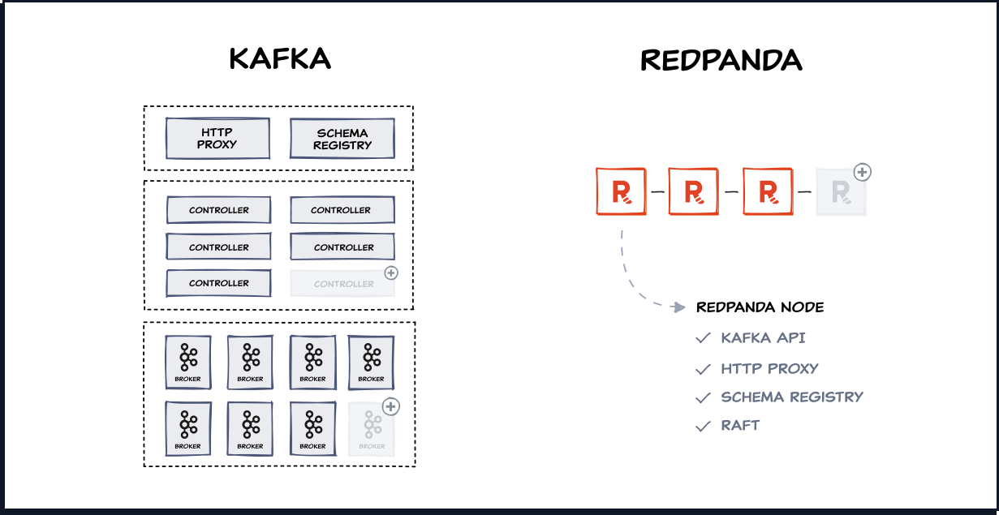

Redpanda is a source available (BSL), Apache Kafka®-compatible, streaming data platform designed from the ground up to be lighter, faster, and simpler to operate. It employs a single binary architecture, free from ZooKeeper and JVMs, with a built-in Schema Registry and HTTP Proxy.

- No Java: A JVM-free and ZooKeeper-free infrastructure.
- Designed in C++: Designed for a better performance than Apache Kafka.
- A single-binary architecture: No dependencies to other libraries or nodes.
- Self-managing and self-healing: A simple but scalable architecture for on-premise and cloud deployments.
- Kafka-compatible: Out-of-the-box support for the Kafka protocol with existing applications, tools, and integrations.


Kafka vs Red Panda¶
| Kafka | Red panda | |
|---|---|---|
| License | Open source Under the Apache License governed by the Apache Software Foundation. |
Source available Under the Business Source License (BSL) with proprietary paid features available under an enterprise license. |
| Contribution model and commercial backing | Open Actively managed and maintained by 1,000+ full-time contributors at over a dozen companies and commercially backed by a broad coalition of vendors. |
Restricted Solely developed and maintained by Redpanda, with restrictive commercial support from other vendors due to BSL license agreement. |
| Source Language | Java | C++ |
| ZooKeeper Dependency | No dependency ZooKeeper was removed by KRaft since version 3.3+ |
No dependency ZooKeeper-free and uses the Raft consensus algorithm. |
| Storage Pattern and Performance Impact | Consistent performance across most real-world workloads Kafka has a purpose-built log and replication layer optimized for sequential IO, which allows it to deliver high throughput and low latency across a broad set of hardware and workloads. |
Performance optimized for selective workloads Redpanda can demonstrate low latency and high throughput on simple workloads. However, because it’s optimized for random IO, its performance can significantly degrade over time. Several common production configurations, such as high producer count, over 30% disk utilization, enabling message keys, enabling TLS, or running for more than 24 hours can cause severe reductions in performance. |
| Broker Framework | Purpose-built immutable log Uses its own purpose-built framework. Data is written in large blocks as high throughput sequential IO, allowing for high performance on drives with even very low IOPS. |
Based on Seastar Uses the Seastar framework, popularized by the Scylla Database, to implement its immutable log. Writes data in small 16kB chunks by default, requiring very high IOPS SSDs. |
| Tiered Storage | In Progress with KIP-405 Slated for early access in Kafka release 3.6. |
Requires Enterprise License Redpanda’s tiered storage requires the purchase of an enterprise license. |
| Replication Protocol | Kafka replication (ISR) Replication is synchronous but data is written to disk asynchronously by design. Brokers don’t need to fsync for correctness and have in-built data recovery and repair. |
Raft protocol Both replication and writing to disk are synchronous. Data must be written (fsynced) to disk synchronously, otherwise, it is possible to lose data during an election of a new leader. |
| Cloud Network Optimized | Optimized for cloud Follower Fetching enables clients to read data from follower replicas in the current AZ, avoiding cross-AZ network costs |
Cloud optimization in beta Follower fetching recently released in version 23.2. |
| Connectors and Stream Processing | Included Kafka Connect and Kafka Streams are packaged as part of the core open source Kafka offering. These two components allow you to connect applications and databases together and process data streams at scale. |
Not Included Not included with Redpanda. While Kafka Connect and Kafka Streams are compatible, they require you to configure, manage, and scale your own JVM-based applications and jobs. |
| Breadth of adoption | Vast developer ecosystem and community Apache Kafka is used by 100,000+ organizations, including 80% of F100 companies, including Goldman Sachs, Netflix and Uber |
Limited adoption and community Redpanda is used by thousands of organizations (undisclosed) |